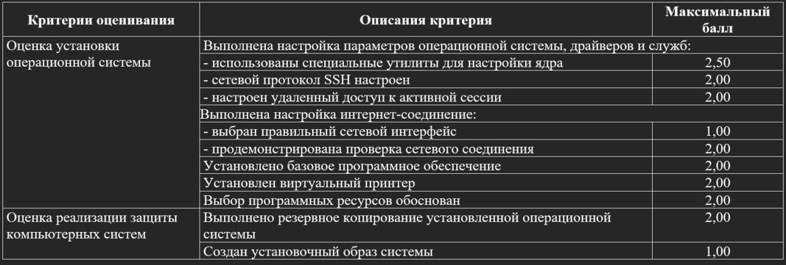
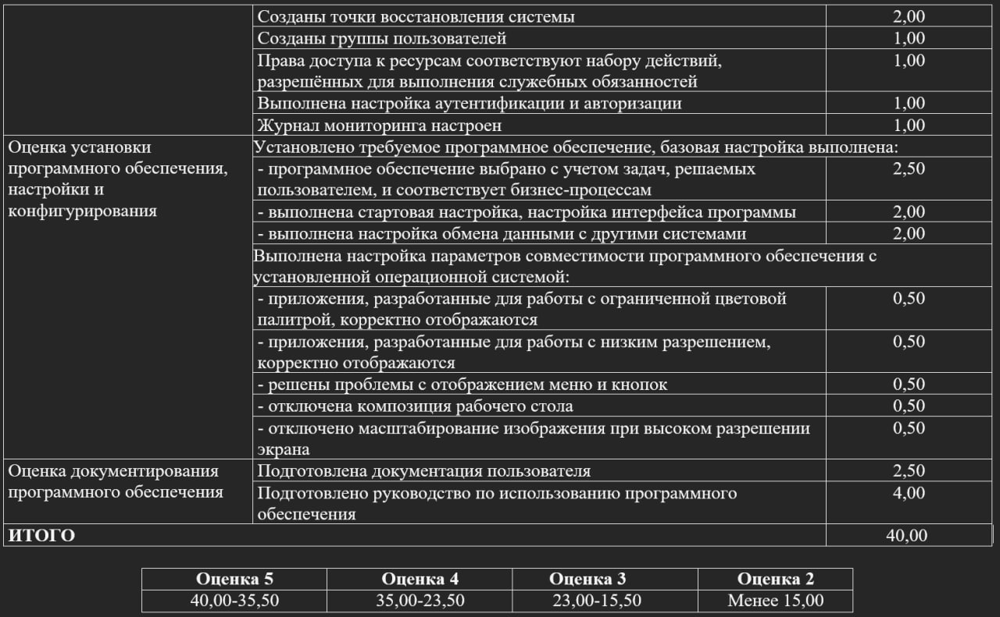

backup:
tar cvpzf backup.tgz –exclude=/proc –exclude=/lost+found –exclude=/backup.tgz –exclude=/mnt –exclude=/sys –exclude=/web /
user groups:
sudo apt install gnome-system-tools
выключить композицию рабочего стола:
gsettings set org.gnome.desktop.interface enable-animations false
gnome-shell --replace &
SSH
ip add
sudo apt install openssh-server
sudo systemctl enable --now ssh
sudo systemctl status ssh
проверка через Putty
df
https://disk.yandex.ru/i/m_nJ-0L5_n0CeA
установочный образ
sudo dd if=/dev/sda of=~/Desktop/system_image.img bs=4M status=progress
Настройка журнала мониторинга
# Просмотр всех логов (с постраничным выводом)
journalctl -xe
# Логи за последний час
journalctl --since "1 hour ago"
# Логи конкретного сервиса (например, nginx)
journalctl -u nginx
# Постоянное отслеживание новых записей
journalctl -f
Сохранение логов в файл: journalctl -u nginx > nginx_logs.txt
в Linux уже есть множество встроенных логов, которые система и различные сервисы создают автоматически. Эти логи содержат информацию о событиях, ошибках, предупреждениях и другой системной информации. Вот некоторые из основных логов, которые вы можете найти на системе Ubuntu:
/var/log/syslog - Основной системный журнал, содержащий информацию о событиях системы и приложений.
/var/log/auth.log - Содержит информацию об авторизации, включая попытки входа в систему и использования sudo.
/var/log/kern.log - Журнал ядра, содержащий сообщения, сгенерированные ядром Linux.
/var/log/dmesg - Содержит сообщения, сгенерированные ядром во время загрузки системы.
/var/log/boot.log - Информация о процессе загрузки системы.
/var/log/cron.log - Логи задач, выполняемых планировщиком cron.
/var/log/apt/history.log и /var/log/apt/term.log - Логи, связанные с установкой и обновлением пакетов через APT.
принтер
sudo apt install cups-pdf